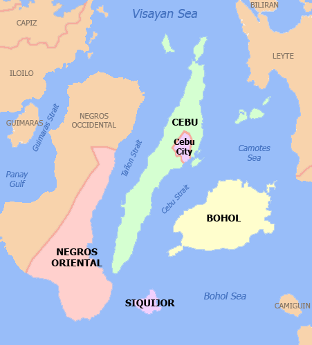

MAP OF VISAYAS

Visayas is the name of a group of islands located in the central Philippines comprising Western, Central and Eastern Visayas regions. These group of islands is where many of the pristine white beaches of the Philippines can be found such as Boracay Island in the Western Visayas, Panglao Island in Central Visayas and Calicoan Island and the Britania Group in Eastern Visayas, not to mention Siquijor Island off Negros Oriental's Dumaguete City and its dramatically beautiful, diving and snorkelling-friendly neighbour Apo Island.
CLICK (ILOILO,
CEBU,
BOHOL,
SIQUIJOR )
IN THE MAP FOR MORE INFOS AND DETAILS ABOUT ITS PLACE!